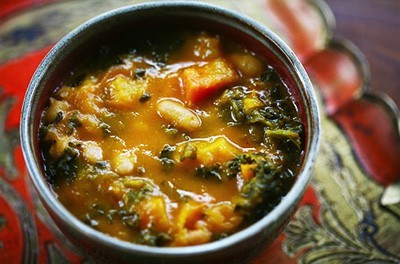

Back
Greek
Vegetable
Stew

Ingredients:
- 2 tablespoons oil
- 2 onions, chopped
- 1 pound green string beans, broken in half
- 1 package frozen or fresh spinach
- 4 cups water
- 6 zucchini, chunked
- 4 yellow squash, chunked
- 2 cups celery leaves
- 4 tomatoes, quartered
- 1 teaspoon salt
- 8 slices lemon
- 1 tablespoon dried oregano
- 3 tablespoons fresh basil
- 2 cloves chopped garlic
- 2 tablespoons lemon juice
Directions:
- Lightly brown onions in a hot dry skillet in 2 tablespoons oil.
- Add oregano and garlic, cook 1 minute.
- Add 4 cups water and tomatoes. Cook 10 minutes.
- Add remaining ingredients. Cook covered for 40 minutes, stirring occasionally.
- Serve with a lemon slice in each bowl